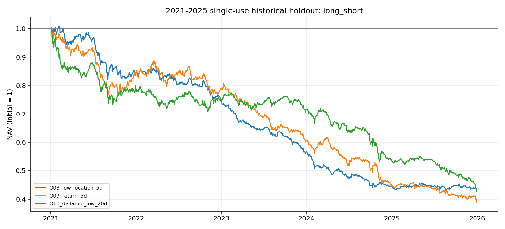
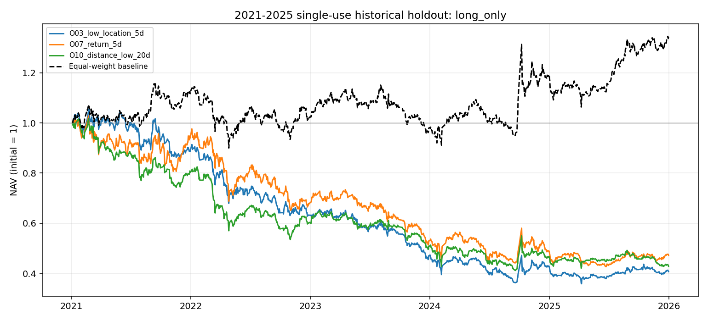

本报告只展示已完成的单次评价，未再次筛选或修改冻结方法。这些行情发生在冻结之前，不能称作真正冻结后的未来样本。理论多空和只多结果均为研究价格代理，存在股票池、复权、借券和执行约束。
2026-10-09 21:32:59 北京时间冻结；2026-10-10 22:11:51 首次开启留出，访问账本保留。2020-08 起数据仅作暖机，评价区间为 2021–2025，共 1212 个观测日期。名单为 O03、O07、O10。
固定名单的多空净累计收益约 −57.14%、−61.17%、−57.42%；只多也为负，同口径等权基线约 +34.31%。1 日 IC 均值为正不代表扣除费用后的组合有正收益；本实验没有支持稳定净盈利。不能根据这张表重新选择因子。
基准成本为单边佣金 3 bps + 滑点 2 bps，卖出额附加 10 bps，理论空头年化借券费 200 bps。与历史复核使用相同冻结口径，属于假设而非真实费表。完整指标含阻止调仓天数和最终持仓数，本次均为 0；这不能证明涨跌停或开盘流动性已建模。
| factor | mode | observations | total_return | annualized_return | annualized_vol | sharpe | max_drawdown | avg_turnover | total_cost_in_daily_nav_units | blocked_days | terminal_held_count | ic_1_mean | ic_1_ir | ic_1_hit | ic_1_days | ic_3_mean | ic_3_ir | ic_3_hit | ic_3_days | ic_5_mean | ic_5_ir | ic_5_hit | ic_5_days |
|---|---|---|---|---|---|---|---|---|---|---|---|---|---|---|---|---|---|---|---|---|---|---|---|
| O03_low_location_5d | long_short | 1212 | -0.57137 | -0.16150 | 0.09153 | -1.87802 | -0.57535 | 0.75185 | 0.95936 | 0 | 0 | 0.01802 | 0.08882 | 0.53840 | 1211.00000 | 0.00390 | 0.01986 | 0.49876 | 1209.00000 | 0.00100 | 0.00510 | 0.49379 | 1207.00000 |
| O03_low_location_5d | long_only | 1212 | -0.59299 | -0.17048 | 0.20599 | -0.80479 | -0.66069 | 0.75963 | 0.92113 | 0 | 0 | 0.01802 | 0.08882 | 0.53840 | 1211.00000 | 0.00390 | 0.01986 | 0.49876 | 1209.00000 | 0.00100 | 0.00510 | 0.49379 | 1207.00000 |
| O07_return_5d | long_short | 1212 | -0.61169 | -0.17855 | 0.11836 | -1.60187 | -0.61271 | 0.72489 | 0.92664 | 0 | 0 | 0.02464 | 0.10400 | 0.54253 | 1211.00000 | 0.01887 | 0.08360 | 0.51530 | 1209.00000 | 0.01921 | 0.08483 | 0.53273 | 1207.00000 |
| O07_return_5d | long_only | 1212 | -0.52818 | -0.14460 | 0.23046 | -0.56298 | -0.58502 | 0.76148 | 0.92337 | 0 | 0 | 0.02464 | 0.10400 | 0.54253 | 1211.00000 | 0.01887 | 0.08360 | 0.51530 | 1209.00000 | 0.01921 | 0.08483 | 0.53273 | 1207.00000 |
| O10_distance_low_20d | long_short | 1212 | -0.57415 | -0.16264 | 0.11953 | -1.42452 | -0.57415 | 0.53588 | 0.69749 | 0 | 0 | 0.03358 | 0.14645 | 0.57143 | 1211.00000 | 0.02849 | 0.12564 | 0.54673 | 1209.00000 | 0.02722 | 0.12252 | 0.54681 | 1207.00000 |
| O10_distance_low_20d | long_only | 1212 | -0.57171 | -0.16164 | 0.19902 | -0.78695 | -0.59534 | 0.70239 | 0.85171 | 0 | 0 | 0.03358 | 0.14645 | 0.57143 | 1211.00000 | 0.02849 | 0.12564 | 0.54673 | 1209.00000 | 0.02722 | 0.12252 | 0.54681 | 1207.00000 |
| baseline_equal_weight | equal_weight | 1212 | 0.34311 | 0.06325 | 0.18102 | 0.42834 | -0.22565 | 0.01531 | 0.01857 | 0 | 0 | NaN | NaN | NaN | NaN | NaN | NaN | NaN | NaN | NaN | NaN | NaN | NaN |


结果清单 · 指标 · 每日净值与成本 · 逐日 IC · 数据质量 · 访问账本
50 stocks chosen from HS300 membership dated 2020-12-31; survivorship bias, no point-in-time membership reconstruction. Signal after close t, rebalance at open t+1, mark NAV at each subsequent open. Fractional shares; missing quotes block rebalance of held assets. Price limits, auction liquidity, board lots and actual borrow are unavailable; returns are a timing/cost research proxy, not executable PnL.